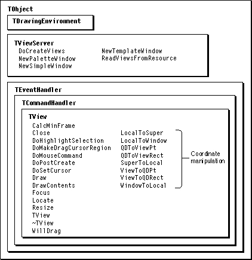
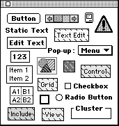

Overview
MacApp uses view objects (or views) to represent a window and each of its parts. Each view is an instance of a subclass of MacApp'sTViewclass. TheTViewclass provides methods for drawing, highlighting a selection, showing a help balloon, dealing with superviews and subviews, and performing translations between different types of coordinates.The views in a window are linked into a hierarchy, starting with the window view itself. One view represents the window frame, another a scroll bar, another the main content area of the window, and so on. Each view can draw its part of the window and can respond to events relating to its part.
- Note
- Views can also exist outside of windows for use in menus and printing.
The TView Class
The abstract classTViewserves as the base class for all view classes in MacApp. Some of the methods ofTVieware fully functional, but others are empty--the code to perform the intended operation must be implemented by a subclass. The following sections describe some of the view fields and methods that are used by most applications. Refer to the MacApp Class and Method Reference or use a code browser to examine additional fields and methods that may be important to your application.Fields of TView
Some of the most commonly used fields ofTVieware shown here:The
fDocument- Refers to the document associated with the view.
fEnabled- Defined in
TEventHandler. Specifies whether the view can respond to mouse clicks, keystrokes, and other events.fLocation- Stores the offset of the upper-left corner of the view from the upper-left corner of its superview.
fShown- Specifies whether the view should be shown.
fSize- Stores the size of the view in view coordinates.
fSubView- Refers to the first subview in a linked list of the view's subviews.
fSuperView- Refers to the view's superview; always
NULLif the view is a window object.TViewclass has many other fields, defined in the fileUView.h.Methods of TView
Figure 17-1 shows some of the classes and methods you use most often in working with views. They include the following:Figure 17-1 View-handling classes and methods
CalcMinFrame- Computes the view's current frame, which is usually determined from its size and location. Your view class can adjust for other factors.
Close- Calls the view's
Changedmethod to notify any dependents that the view is closing, then callsCloseon each subview, if any.DoHighlightSelection- Highlights the current selection in the view. It does nothing in
TViewbut is overridden inTGridViewand other view subclasses.DoMakeDragCursorRegion- The
DoMakeDragCursorRegionmethod creates and returns a region, in local coordinates, that can be used to test whether the mouse is in a location that would initiate a drag operation (and over which the cursor image should be set to a drag cursor).DoMouseCommand- In
TViewtheDoMouseCommandmethod does nothing. Many of MacApp's view classes overrideDoMouseCommandto track the mouse in the view, and you may wish to do so in your view classes as well.DoPostCreate- When you use MacApp's global view server object (page 425) to create a view hierarchy from a resource, the view server calls
DoPostCreateafter the entire view hierarchy has been created. You can override this method to do further initialization at a time when you know all the views in the hierarchy have been created.
The
DoSetCursor- Sets the cursor to the grabber hand if a drag would initiate a drag operation; otherwise, it sets the cursor based on the view's
fCursorIDfield. If the value offCursorIDiskNoResource, it sets the arrow cursor.Draw- Draws the contents of the view. It does nothing in
TView. It is overridden in many MacApp views and in most of your views as well.DrawContents- The
TView::Updatemethod callsDrawContentsto draw the view's contents;DrawContentscauses theDrawmethod to be called for each subview that needs to be drawn. You don't normally override this method.Focus- Attempts to set up the drawing environment of the view, which includes the port, origin, offset, and clipping. You rarely override this method.
Locate- Relocates the view to the specified location (calls the
SetFramemethod, without changing the size).Resize- Resizes the view to the specified size (calls the
SetFramemethod, without changing the location).TView- The constructor puts the view object into a safe state, setting fields to
NULLor to default values.~TView- The destructor method performs various cleanup operations, including freeing all subviews, resetting the application's target, freeing the view's drawing environment object, and removing the view's adorners.
WillDrag- The
WillDragmethod returnsTRUEif the view can drag and the cursor is over draggable content. You don't normally override this method.TViewclass also includes methods that provide stream support for view objects. These methods can read and write data for individual views, as well as for entire view hierarchies.You override
WriteFields- Writes view data to a stream.
ReadFields- Reads view data from a stream.
WriteSubViews- Writes a view's subviews to a stream.
ReadSubViews- Reads a view's subviews from a stream and adds them to the view.
WriteFieldsandReadFieldsif you have added fields to a view class and want the values of those variables preserved when writing or reading the view's data with a stream.The
TViewclass has many other methods, defined in the fileUView.h.Other View Classes
You don't normally instantiate an object of typeTView--you define a subclass ofTView, or of one of the more than 20 specialized subclasses ofTViewprovided by MacApp, which include the following:
TControl- The
TControlclass, along with its subclasses, provides methods to deal with traditional Macintosh controls, such as radio buttons and checkboxes. Other view types that can be used as controls include pop-up menus, pictures, and icons.TDeskScrapView- Provides methods to help your application show the Clipboard.
TDialogView- Duplicates (with the help of other classes) some of the Dialog Manager's functions to make a MacApp window operate like a dialog box.
TGridView- Provides methods to deal with rows and columns of cells.
TScroller- Calculates coordinate translations to perform scrolling in a view.
TTEView- Displays and manipulates text.
TWindow- Represents a Macintosh window.
Other View-Related Classes
MacApp also provides two classes your application uses in working with views:TViewServerfor creating views andTDrawingEnvironmentfor working with a view's drawing characteristics. These classes are described in the following sections.The TDrawingEnvironment Class
MacApp provides theTDrawingEnvironmentclass to work with characteristics of a view's graphics environment, including the pen size, pen pattern, pen mode, foreground color, and background color. You can associate an object of typeTDrawingEnvironmentwith each view object, making it possible to customize the drawing environment of a view without having to define a view subclass. You can use a view-editing application to specify the drawing environment for a view in its'View'resource.The TViewServer Class
TheTViewServerclass provides methods to manage the creation of views for your application. MacApp automatically creates aTViewServerobject and stores a reference to it in the global variablegViewServer. You create views by calling on the methods ofgViewServer, which include the following:In the IconEdit application an icon document creates its view hierarchy with this call:
NewPaletteWindow- Creates a window that has a main view, which may or may not scroll, plus a nonscrolling palette along the left edge or a nonscrolling status area at the top of the window.
NewSimpleWindow- Creates a simple window that contains one view, which may or may not scroll.
NewTemplateWindow- Creates a window from a
'View'resource. The window may have a view hierarchy of arbitrary complexity.DoCreateViews- Creates a view hierarchy using the
ReadViewsFromResourcemethod. Calls the root view'sAdjustSizeandHandlePostCreatemethods. Called byNewTemplateWindow.aWindow = gViewServer->NewTemplateWindow(kIconWindowId, this);The constant kIconWindowId specifies a resource ID for a predefined view resource.Working With View Resource Templates
MacApp provides a useful tool for defining views and view hierarchies: view resource templates. View resource templates are described in "Specifying Views With View Resource Templates," beginning on page 217.You can use a resource-editing application such as the Ad Lib view editor (available from Apple Computer) to create view resources that specify the user interface for your application. A view resource can define an entire window or view hierarchy containing many MacApp view objects, including checkboxes, radio buttons, and other controls. You can specify the initial settings for any window or view in the hierarchy.
Defining View Resources
The Ad Lib view editor provides a graphical environment that lets you quickly define your application's user interface. Figure 17-2 shows the Object Palette window from Ad Lib. As you design a window for your application, you can drag any of the view items from the Object Palette window into your window, including pop-up menus, edit text views, picture views, clusters, and radio buttons.Figure 17-2 Ad Lib's Object Palette window

Ad Lib allows you to set initial values for many fields in MacApp's predefined view classes. You can also specify the default target view for a window and add a drag-and-drop behavior to a view. For more information, refer to the Ad Lib user's manual.
Resource editors such as Ad Lib produce a compiled resource that you can include into your resource definition file. For example, the following line includes a 'View' resource, with resource ID kYourView, into a text resource definition file:
include "kYourView.rsrc" 'View' (kYourView); // Some view resource.The following section describes how to convert between text and compiled resource formats.Converting Between Resource Formats
It may sometimes be convenient to edit a compiled view resource with a resource editor. At other times it may be easier to edit a text resource definition with a text editor. You can use MPW's Rez resource compiler tool to convert a text resource definition into a compiled view resource. The DeRez tool converts in the other direction--from a compiled view resource into a text resource definition.The following three MPW command lines "derez" a view (convert from a compiled view resource to a text resource definition):
DeRez YourView.rsrc Types.r SysTypes.r "{MARIncludes}MacAppTypes.r"In the first line, the-i "{MACPlusIncludes}" -only "'View'(1234)" >YourView.derez CleanupThreeOhViews YourView.derez DeRez YourView.rsrc Types.r SysTypes.r "{MARIncludes}MacAppTypes.r"
symbol, created by typing Option-d, indicates that the command should be treated as one line. YourView.rsrc specifies a file you have created that contains a compiled'View'resource with ID 1234. "{MARIncludes}ViewTypes.r", Types.r, and SysTypes.r specify resource definition files that the DeRez tool should consult for information about the format of the resources to be decompiled."{MARIncludes}ViewTypes.r"specifies a full path, but it isn't necessary to do so for Types.r and SysTypes.r. YourView.derez specifies the location for the converted output.The second line invokes the MacApp
CleanupThreeOhViewsscript (found in the{MATools}folder) to reformat the View resource text to make it easier to read.The third line again uses the DeRez tool to get the string list resources ('STR#') from the compiled resource file and add them to the converted file. These resources are used for your window titles, control labels, Balloon Help text, and other purposes. It also gets all the text style resources ('TxSt') that may be used by your views. (DeRez doesn't know which resources you actually use; it just gets all the resources in your file, of the specified type.)
The Rez tool works in a similar manner to DeRez. Both of these MPW tools can be used with the Commando interface, which presents one or more dialog boxes that allow you to specify command options. For more information, refer to the Macintosh Programmer's Workshop Reference.
Creating Views From Resource Templates
When you build your application with MPW, the Rez resource compiler compiles each text view definition into a view resource, which, along with any previously compiled'View'resources, becomes part of your application. Your application can then use MacApp's global view server object,gViewServer(page 425), to create window and view objects based on the view resources you have defined. You can create any number of windows from the same view resource, with the view hierarchy for each window initialized according to the resource.By editing your view resources and rebuilding the application, you can change the appearance and settings of a window object without recompiling the application's code. Since a window can be the root of a complex hierarchy of views, you have great flexibility in changing the appearance and behavior of your views, with fast turnaround.
Initializing Views Created by Template
View objects, like other MacApp objects, come with a constructor to put the object into a safe state. Putting an object into a safe state includes initializing any reference variables toNULLso that the object can be safely deallocated if an error occurs during initialization. When you define a new view class, you should define a constructor to set the fields to safe or default values.After a view hierarchy has been created, the view server object traverses it, starting with the root view, and calls the
DoPostCreatemethod of each view object in the hierarchy.Your view hierarchy is likely to contain some view objects based on subclasses you have defined (not just views based on MacApp classes). A view-editing application may allow you to install your view classes in a hierarchy but be unable to set initial values for the custom fields in your views. That can happen because a view editor is likely to know about MacApp's view classes, which are defined in
ViewTypes.r, but not about classes you have defined. To initialize fields of a custom view with your view editor, you can add a view type definition to your MacAppMAMakefile and define a corresponding template for your view editor.You can override the
DoPostCreatemethod in your view classes to set initial values and do any other work that cannot be handled automatically through the use of a view resource. For example, the IconEdit application uses theDoPostCreatemethod to store an initial zoom-magnification level.Using Adorners With Views
MacApp defines a number of adornment classes, each of which implements a specific kind of drawing or highlighting. You can instantiate an adorner object in your application and attach it to a view to perform a drawing task, such as highlighting or framing the view. MacApp's adorner mechanism is described in "Adorners," beginning on page 213.MacApp's adorner classes include
For the
TFrameAdorner- Frames the view's adorn extent.
TLineBottomAdorner- Adorns the bottom line of the view's adorn extent.
TLineLeftAdorner- Adorns the left line of the view's adorn extent.
TLineRightAdorner- Adorns the right line of the view's adorn extent.
TLineTopAdorner- Adorns the top line of the view's adorn extent.
TOvalAdorner- Adorns the view's adorn extent with an oval.
TRRectAdorner- Adorns the view's adorn extent with a round rectangle.
TViewclass, the adorn extent is equal to the view's extent, which is computed by subtracting its location from its size. For theTControlclass, the adorn extent is adjusted if the control has a shadow adorner. To specify a different adorn extent for your view, you override theGetAdornExtentmethod.Your application can also use one of the global adorner objects defined by MacApp. These adorners are described in "MacApp's Adorner Classes," beginning on page 213.